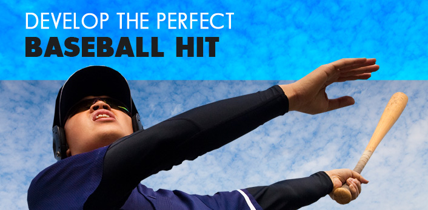
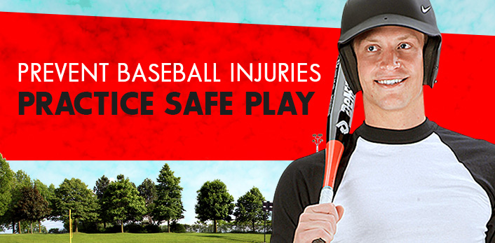
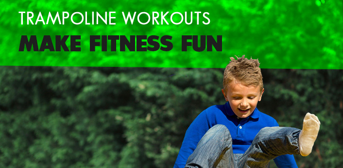

Helpful Hints
Learn How

See It For Yourself
Try These Steps

Try These Fun Workouts

Develop The Perfect
Baseball Hit
Why Spring Camping Is
Great for Families
Prevent Baseball Injuries
Practice Safe Play
Trampoline Workouts
Make Fitness Fun
Filter Articles By Categories
Articles per page:
Show All
12
24
Articles per page:
Show All
12
24